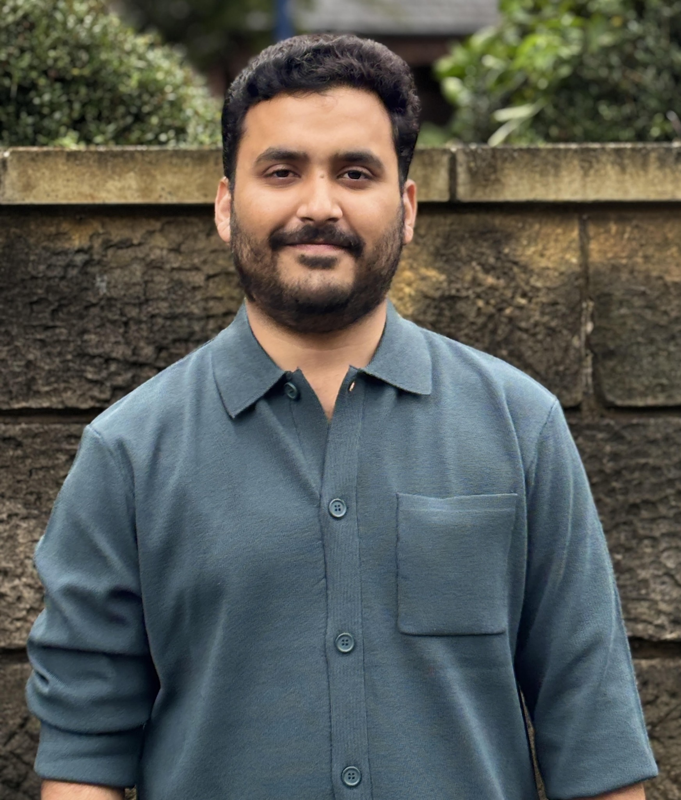
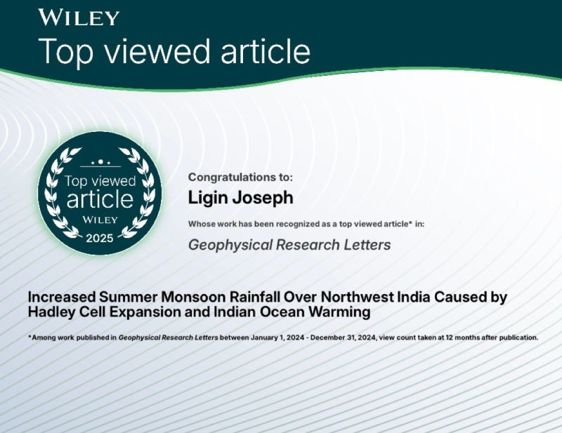
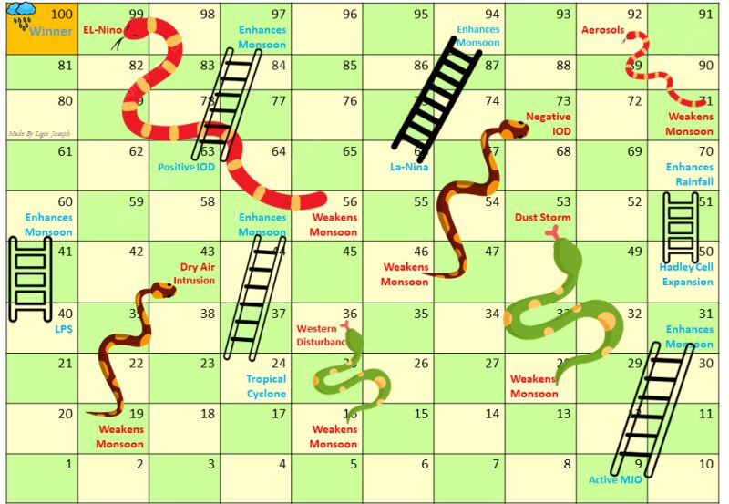

2026 · The ConversationA ‘super El Niño’ could make India’s monsoon drier yet more dangerous ↗
2026 · The ConversationA ‘super El Niño’ could make India’s monsoon drier yet more dangerous ↗Cover image: Divyakant Solanki / EPA via The Conversation
I am a PhD researcher in physical oceanography at the University of Southampton. My work explores Indian Ocean warming, tropical rainfall, marine heatwaves and the physical drivers of monsoon change.

About
I am a final-year PhD researcher in the School of Ocean and Earth Science at the University of Southampton, based at the National Oceanography Centre Southampton. My doctoral research examines the oceanic fingerprints on changing monsoons over South and Southeast Asia.
I use observations, ocean and atmosphere reanalyses, Lagrangian diagnostics and climate model experiments to understand how changes in ocean heat and circulation affect rainfall. I was a visiting PhD researcher at the University of Cambridge in 2025. Before my PhD, I worked as a research consultant at KAUST and a senior research fellow at IIT Delhi. I hold an MSc in Ocean and Climate Physics from the University of Western Brittany, during which I completed research internships at LOCEAN in Paris.
Broadly, I am interested in the links between physical oceanography, climate dynamics and the weather extremes that affect people across monsoon regions.
Recent work
Our paper on recent tropical rainfall change was published in Nature Communications.
Our study of North Indian Ocean marine heatwaves and South Asian monsoon rainfall appeared in Frontiers in Climate.
I wrote an explainer on El Niño and India's monsoon for The Conversation.
Just Have a Think discussed our tropical rainfall research in a video.

My Geophysical Research Letters paper was recognised among the top 10% most-viewed papers published in Geophysical Research Letters in 2024.
Research
My research asks how the ocean influences regional rainfall as the climate changes. I focus on mechanisms: tracing heat and moisture, separating circulation changes from thermodynamic effects, and testing what can explain observed trends.
How Indian Ocean temperatures and atmospheric circulation shape the distribution and intensity of South Asian monsoon rainfall.
Why the western Indian Ocean is warming, how ocean transport contributes, and what upper-ocean heat means for the atmosphere.
How ENSO, marine heatwaves and ocean–atmosphere coupling interact with rainfall and extremes across the tropics.
Publications
For my full publication record, see my Google Scholar profile.
Teaching
I have taught with Climatematch Academy and The Brilliant Club, supporting students as they learn climate science and connect foundational ideas to current research. At the University of Southampton, I have worked as a teaching assistant and demonstrator for How to Be Scientifically Literate, Large Scale Ocean Processes and Climate, and Introduction to Physical Oceanography.
I enjoy making physical concepts approachable, especially the links between ocean circulation, density, heat and climate.
Presentations
Selected conference presentations and research talks on the ocean’s role in monsoons and climate change.
Writing
I write about the physical processes behind monsoon variability, cyclones and climate extremes. Read the original articles in The Conversation:
2026 · The ConversationA ‘super El Niño’ could make India’s monsoon drier yet more dangerous ↗ 2025 · The ConversationEven ‘weak’ cyclones are being turned into deadly rainmakers by fast-warming oceans ↗
2025 · The ConversationEven ‘weak’ cyclones are being turned into deadly rainmakers by fast-warming oceans ↗ 2025 · The ConversationIndia’s monsoon is becoming more extreme, even though overall rainfall has hardly increased ↗
2025 · The ConversationIndia’s monsoon is becoming more extreme, even though overall rainfall has hardly increased ↗Science communication
Games, comics and short analyses that make ocean and monsoon science easier to explore. Each link opens the original post on LinkedIn.

An educational game I created to show how phenomena such as El Niño, the Indian Ocean Dipole and aerosols can shape a monsoon season. The board turns these climate influences into a game that can be used for learning and discussion.
Explore the original post ↗Media
Selected coverage and discussions of my research and writing.
My articles in The Conversation have also been republished by Scroll.in, ABC Asia and Down To Earth (Malayalam), among others.
Contact
I welcome enquiries about research collaborations, talks, teaching and science communication.